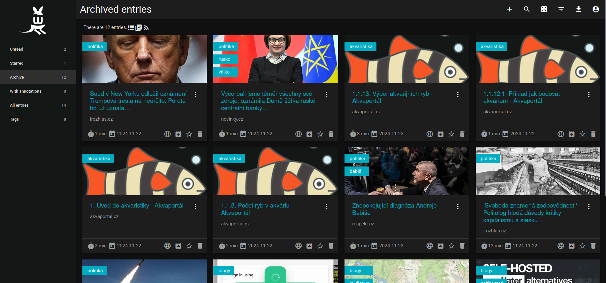

Wallabag je open-source aplikace určená pro ukládání, organizaci a čtení článků. Umožňuje vám ukládat obsah webových stránek, odstranit rušivé prvky, jako jsou reklamy, a číst články v jednoduchém formátu.
Na OSCloud je Wallabag dostupný na adrese read.oscloud.cz. Pro registraci je nutné kontaktovat podporu na helpdesk.oscloud.cz nebo emailem na podpora@oscloud.cz.
Srovnání se službami Pocket, Instapaper a Wallabag
| Funkce | Wallabag | Instapaper | |
|---|---|---|---|
| Open-source | Ano | Ne | Ne |
| Šifrování dat | Částečně* | Ne | Ne |
| Offline přístup | Ano | Ano | Ano |
| Přizpůsobitelné rozhraní | Ano | Ne | Částečně |
| Ukládání bez reklam | Ano | Ano | Ano |
| Import/export dat | Ano | Ano | Ano |
| Podpora více uživatelů | Ano | Ne | Ne |
*Wallabag podporuje šifrování dat během přenosu pomocí HTTPS. Data uložená na serveru však nejsou automaticky šifrována end-to-end.
Bezpečnost
- Kontrola nad daty: Protože je Wallabag open-source, můžete si být jisti, že vaše data nejsou sledována třetími stranami.
- Soukromí: Vaše data nejsou sdílena s žádnou reklamní sítí.
- HTTPS: Wallabag na OSCloud využívá HTTPS pro zabezpečení přenosu dat.
Výhody Wallabag
- Jednoduchost: Články můžete číst bez rušivých prvků, jako jsou reklamy.
- Organizace: Umožňuje štítkovat články a organizovat je podle kategorií.
- Export dat: Možnost exportovat uložené články ve formátu HTML, JSON nebo EPUB.
- Podpora aplikací: K dispozici jsou mobilní aplikace pro Android a iOS.
Mobilní aplikace Wallabag
Pro pohodlný přístup na cestách si stáhněte mobilní aplikaci Wallabag:


Po instalaci aplikace propojte svůj účet Wallabag na OSCloud podle přiložených pokynů v aplikaci.
Jak začít
- Požádejte o registraci na helpdesk.oscloud.cz nebo napište na podpora@oscloud.cz.
- Po schválení registrace obdržíte přihlašovací údaje.
- Přihlaste se na read.oscloud.cz pomocí poskytnutých údajů.
- Nainstalujte si mobilní aplikaci Wallabag.
- Propojte aplikaci s vaším OSCloud účtem.
Další informace
Pro více informací o funkcích Wallabag navštivte oficiální web Wallabag.